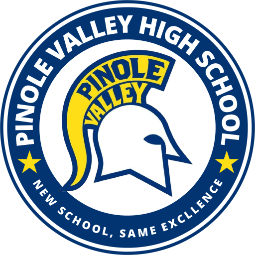
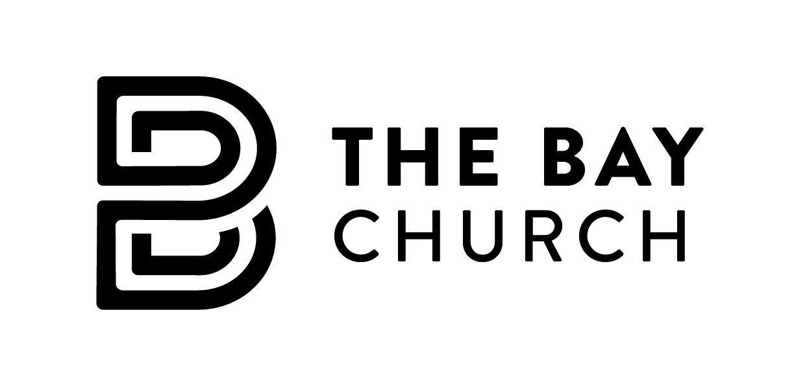

University of California, San Diego | Mar. 2026 – Jun. 2026 | Hybrid: La Jolla, California
Serve as Vice President of Internal Operations for the Artifical Intelligence Student Collective (AISC) at UC San Diego, leading the coordination and execution of internal initiatives across technical project teams and organizational operations. In this role, I design and implement scalable workflows to support AI and machine learning project development, ensuring efficient collaboration, clear communication, and alignment with organizational goals. I work closely with project leads and technical members to streamline processes related to data handling, experimentation, and model development, while also supporting the structure and delivery of multiple concurrent projects. Additionally, I oversee internal systems for communication, documentation, and progress tracking, helping to create a structured and scalable environment for AI-focused research and development. I facilitate onboarding and mentorship for new members, enabling their integration into technical teams and ongoing projects, and contribute to improving operational efficiency by identifying bottlenecks and optimizing team workflows. Through this role, I help bridge technical execution and organizational leadership, supporting the growth and impact of AI-driven initiatives within the UCSD community.

Pinole Valley High School | Jan. 2021 – Jun. 2022 | Pinole, California
When I served as co-captain of Pinole Valley's varsity baseball team for the 2022 season, I took ownership of the culture and standard of our program from day one. I led throughout the entire year — summer showcases, fall scrimmages, winter lift, and the spring season — making sure our team was locked in at every stage. I organized post-practice workouts in the batting cages, kept morale high through adversity, and held myself to the same standard I expected from every teammate. My leadership helped foster a winning culture that carried us to a North Coast Section Regional Tournament a ppearance. This experience taught me that leadership is earned through consistency, accountability, and making the people around you better every single day.

City of Pinole | Jan. 2020 – Jun. 2022 | On-Site: Pinole, California
As Vice President of the Interact Club of Pinole, I lead volunteer efforts that served the broader Pinole community. I organized city-wide clean-up events, food drives, and other service projects aimed at improving the lives of local residents. Some events included Pinole Shores clearn up, where we picked up trash and miscellaneous items from the beaches of Pinole. Halloween Night in Fernandez Park where there were games, candy, and activites for the kids of Pinole to wear their Halloween costume and spend a night with their families. Christmas Tree lighting in downtown Pinole, where the whole town comes together and lights the big Christmas Tree that is set in the town's center. Working closely with Rotary International and city officials including previous mayor Devin T. Murphy and current mayor Cameron Sasai. I helped strengthen partnerships between youth leaders and civic institutions. I was responsible for coordinating event logistics, assigning tasks, and motivating members to participate actively. Our projects had a visible impact on the city of Pinole and encouraged greater community involvement. Through this role, I developed strong leadership, communication, and planning skills. It also taught me the importance of civic responsibility and public service beyond the classroom.

The Bay Church | Jun. 2022 – Sept. 2022 | On-Site: Pittsburg, California
I volunteered at the Bay Church, I dedicated my time to serving my community through food drives aimed at providing essential resources to families in need. I assisted in collecting, sorting, and distributing food donations, ensuring that every family who came received support with dignity and care. Working alongside fellow volunteers, I developed a deeper sense of empathy and social responsibility, understanding firsthand the impact that community-driven efforts can have on people's lives. This experience reinforced my belief that showing up for others — especially those facing hardship — is one of the most meaningful contributions a person can make, and it continues to shape the way I approach service and leadership in everything I do.
The Bay Church | Jun. 2022 – Sept. 2022 | On-Site: Pittsburg, California
Serving individuals experiencing homelessness, I played a hands-on role in setting up and maintaining shower facilities to ensure every person who came through had a clean, welcoming experience. Before guests arrived, I helped organize and prepare the space, stocking it with towels, soap, and toothbrushes so everything was ready to go. Throughout the event I cleaned the showers between uses, kept supplies stocked, and greeted each individual with respect and warmth. It was some of the most grounding volunteer work I have done — a reminder that restoring someone's dignity can be as simple as handing them a clean towel and making them feel seen. This experience deepened my commitment to community service and reinforced that showing up with humility and a willingness to do whatever is needed is at the heart of meaningful contribution.